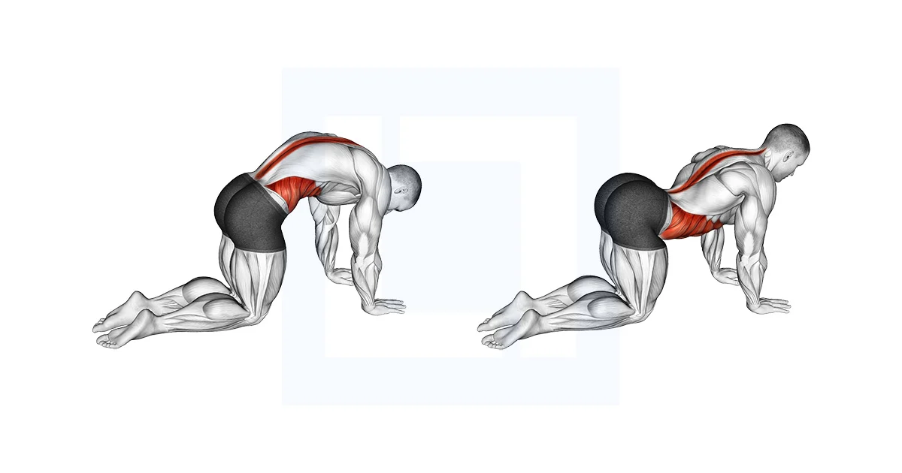
1. Gato - Camello (Cat-Cow)
10 a 12 reps lentasSincroniza la respiración inhalando al subir y exhalando al bajar la columna.
Diseño premium optimizado en formato **A4 Horizontal (Landscape)** para imprimir y pegar en tu pared. Asegúrate de configurar la impresión en orientación horizontal, tamaño A4 y habilitar "Gráficos de fondo" en tu navegador.

Sincroniza la respiración inhalando al subir y exhalando al bajar la columna.
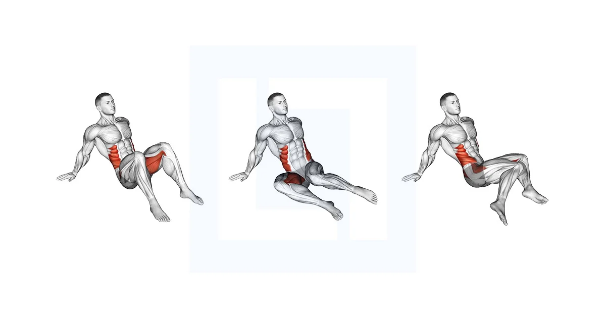
Espalda erguida e inclinación suave sobre la pierna delantera.
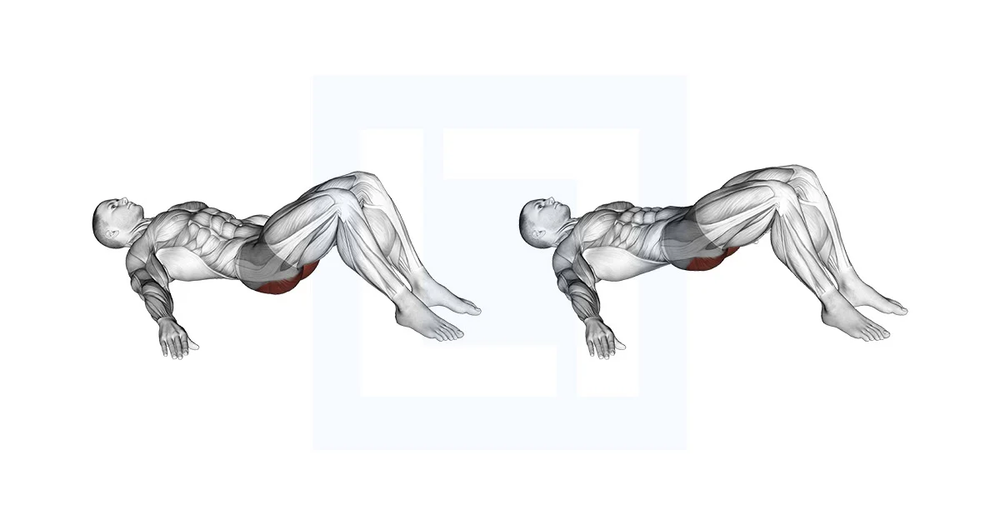
Sostén 2 segundos la contracción arriba en cada repetición.
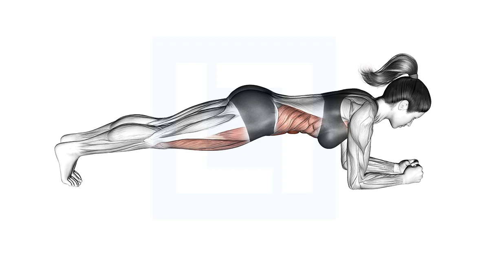
Mantén el cuerpo alineado en bloque apoyando antebrazos.
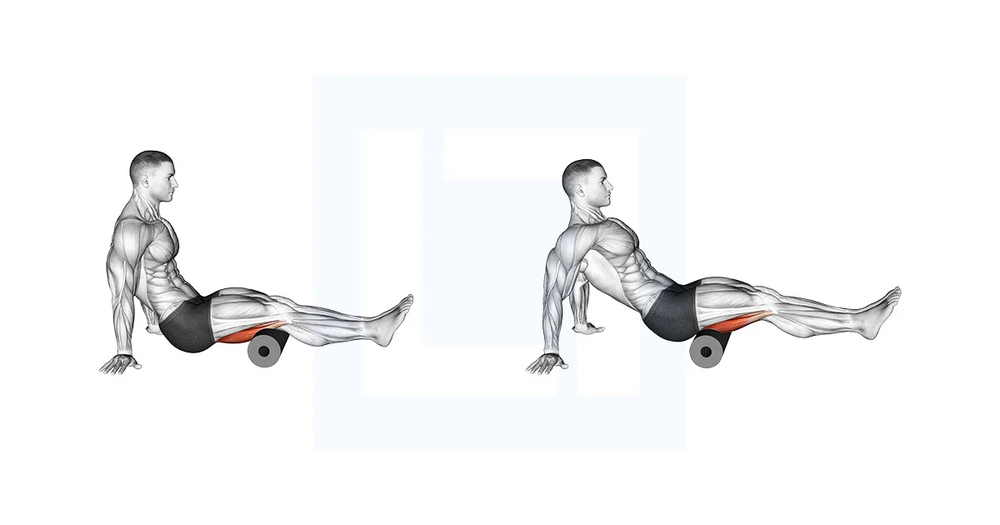
Gemelos, isquiotibiales, cuádriceps y glúteos (20s fijos en puntos de dolor).
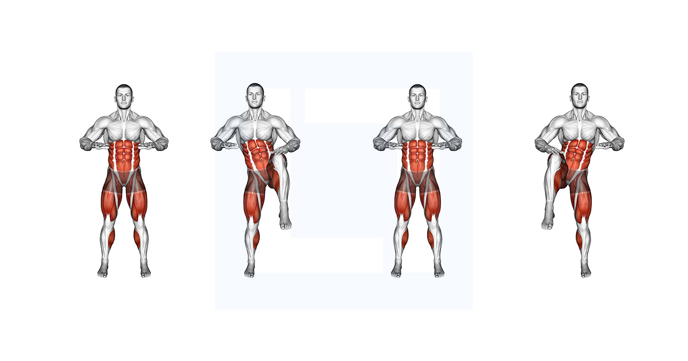
Ritmo suave, tocando con la mano. Apoyo de talón y planta (cero salto).

Pie trasero en silla, desciende la cadera de forma vertical.
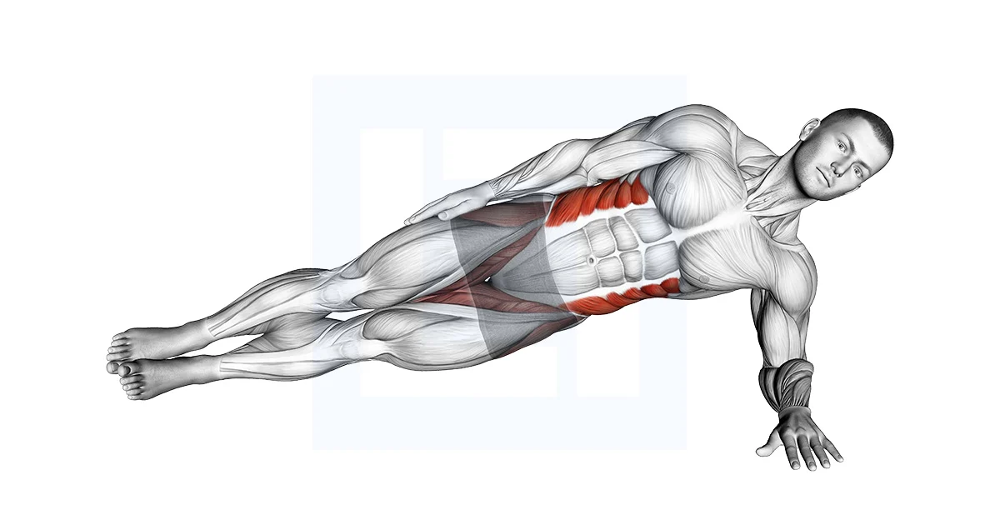
Antebrazo apoyado alineando cabeza, cadera y tobillos.
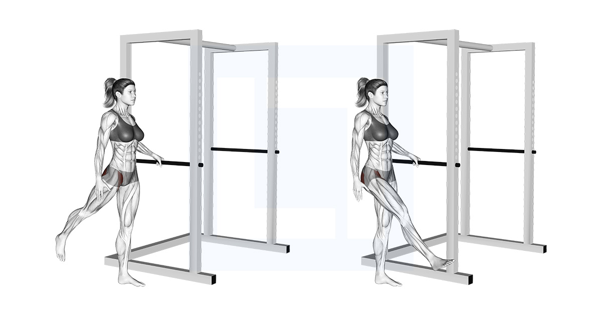
De pie apoyando mano en pared, balancea la pierna adelante/atrás y luego lado a lado.
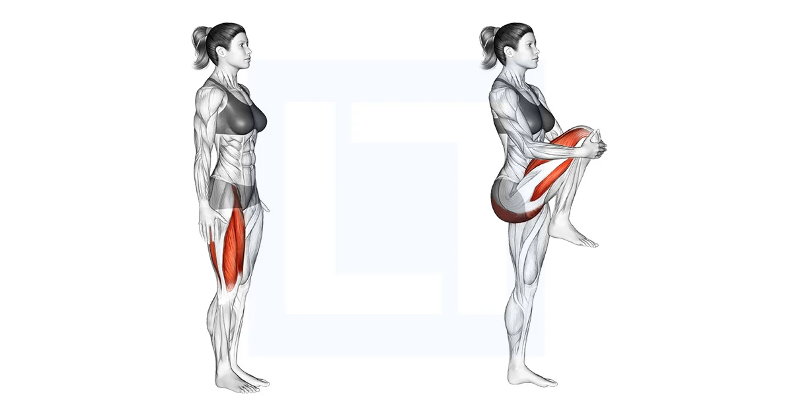
Da un paso continuo, eleva la rodilla al pecho presionando 1 segundo con las manos y avanza.
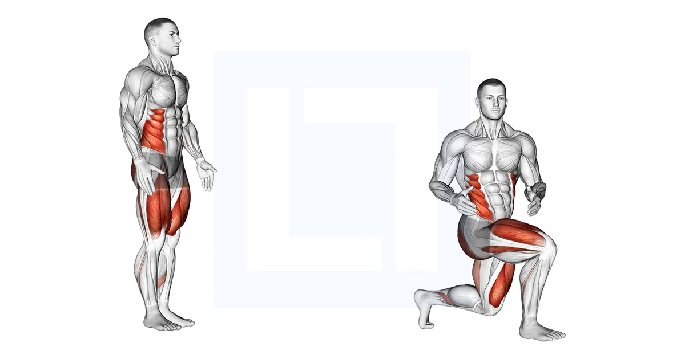
Realiza una zancada profunda y gira el torso de forma controlada hacia la pierna delantera.
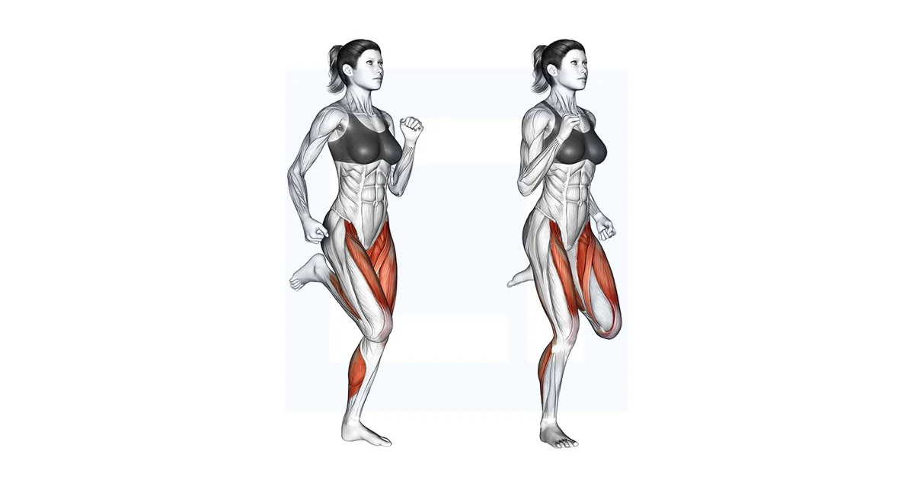
Bloque alternando en el sitio trote suave, skipping de rodillas bajas y talones a glúteos.
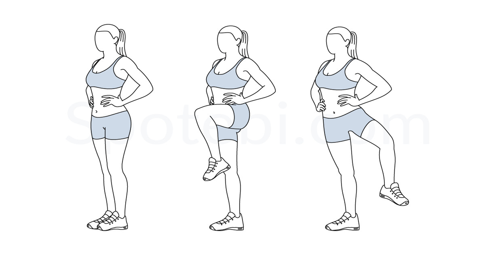
Trote suave y fluido elevando rodilla y abriendo/cerrando la cadera hacia afuera y adentro.
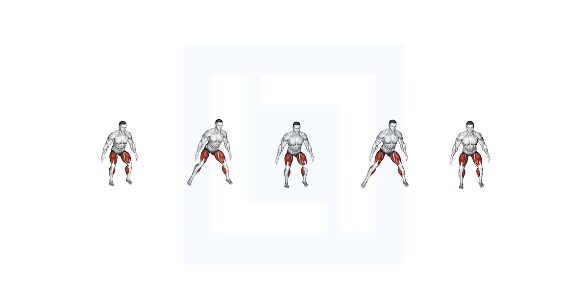
3-4 pasos laterales rápidos, frena bajando la cadera en sentadilla y cambia de sentido.
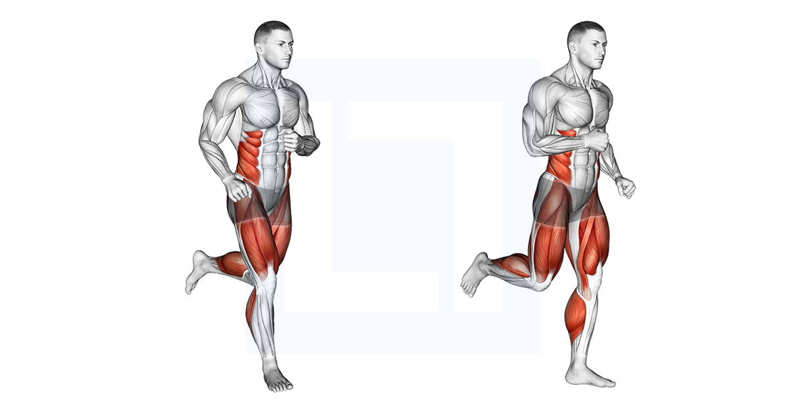
Carreras cortas de 15-20m acelerando progresivamente del 50% al 90% y frenando suave.
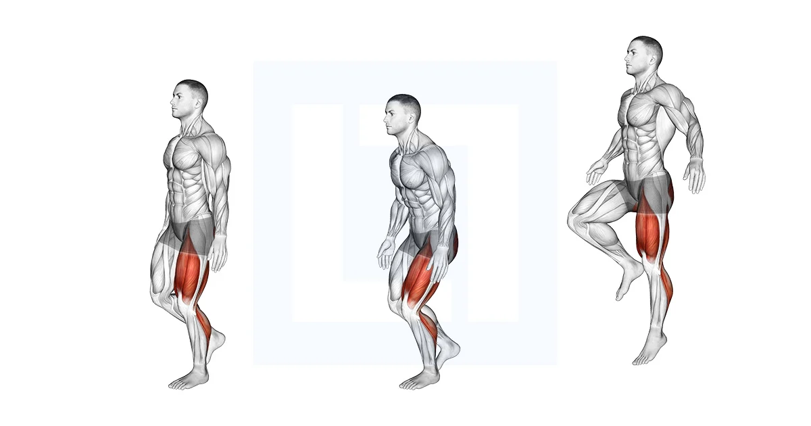
Rebotes cortos en el sitio sobre una sola pierna para activar la reactividad del tendón.